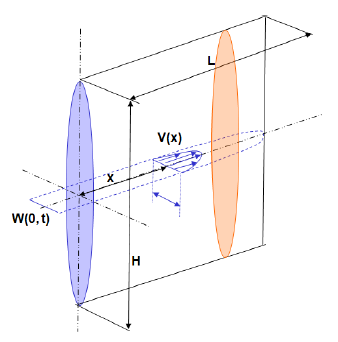
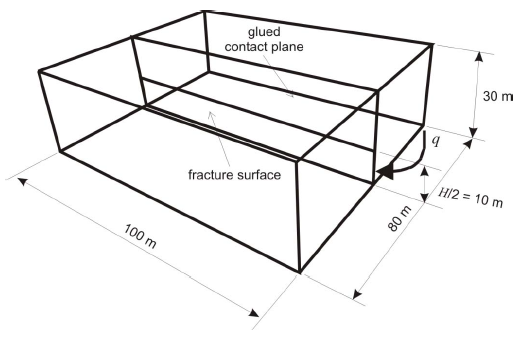
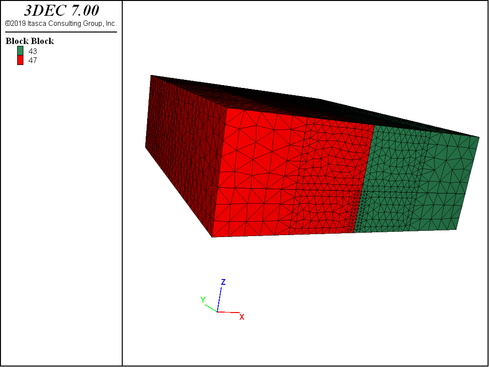
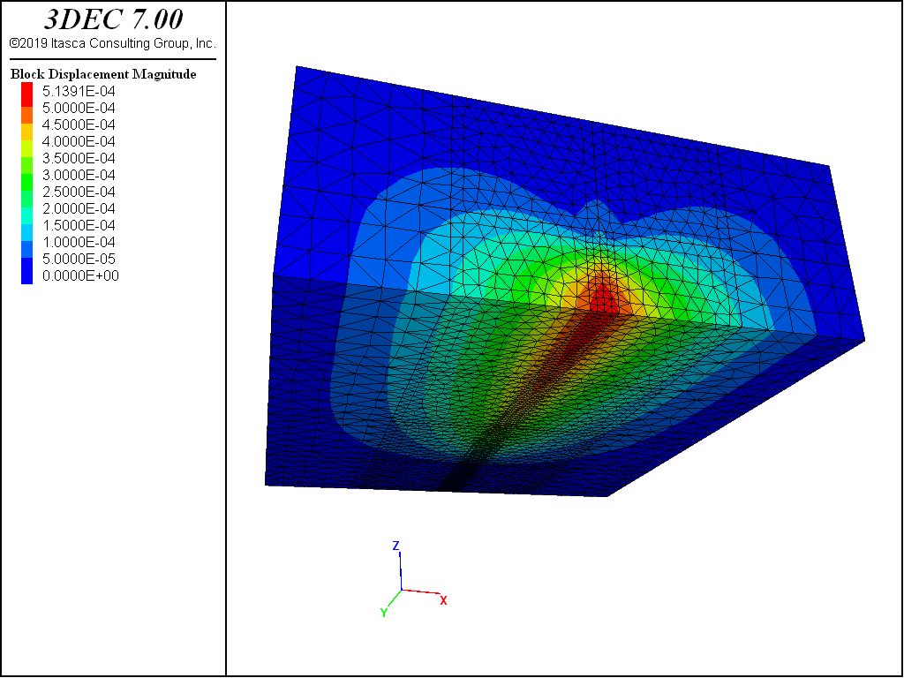
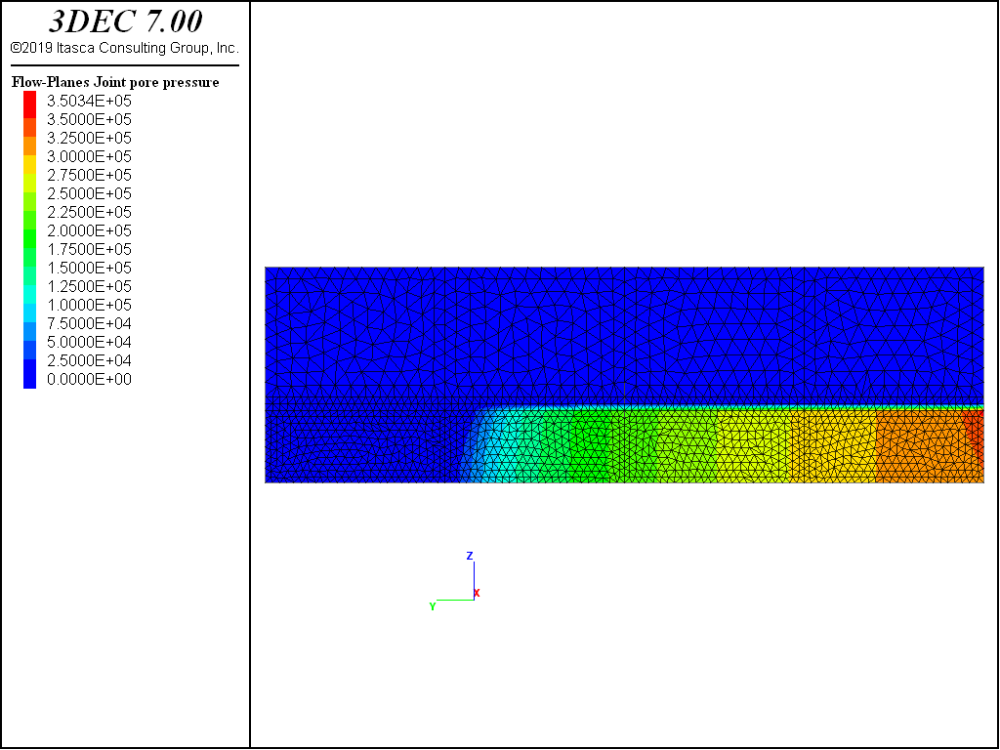
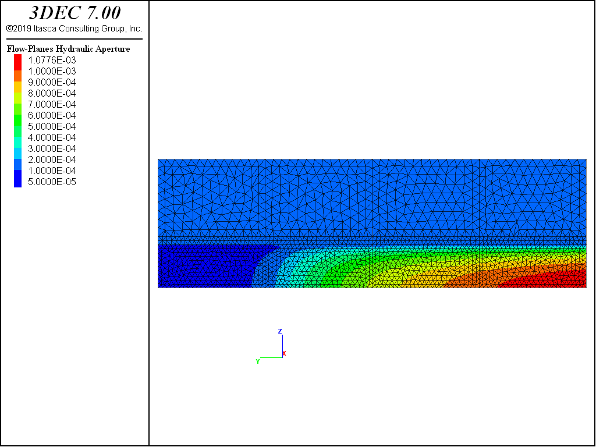
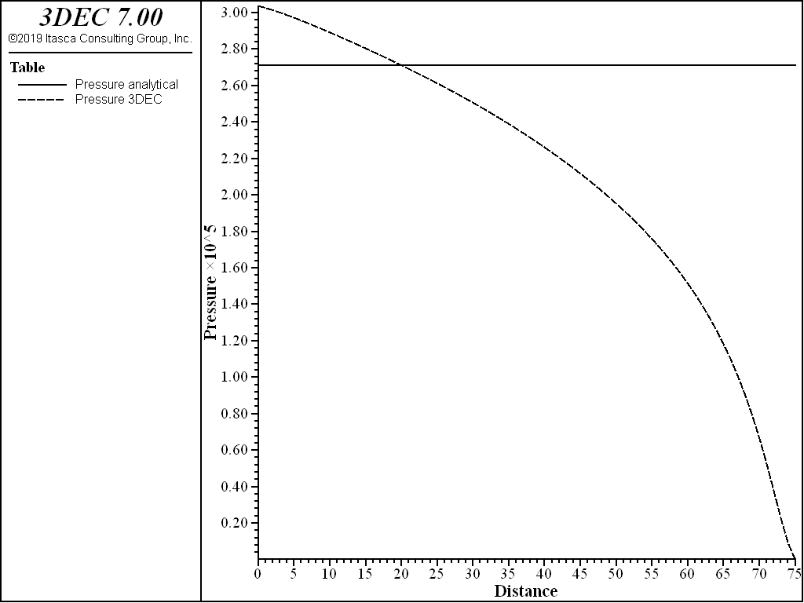
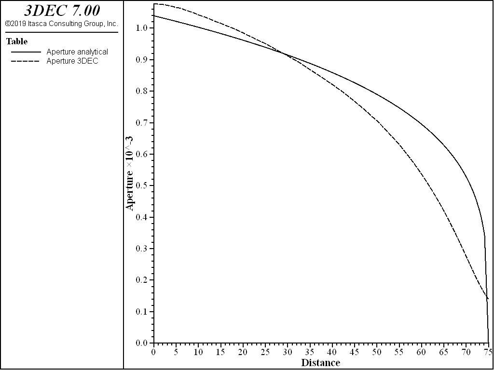

水力压裂
警告
注意
要在 3DEC 中查看此项目，请使用菜单命令 。选择“3DEC/ ExampleApplications/ Hydraulic_Ffracture”，然后选择“PKN.prj”进行加载。所用的主数据文件（main data files）显示在本示例的末尾。所有数据文件都可在该项目中找到。
该问题的运行时间很长。如需运行此验证问题，请预留 12-24 小时（取决于计算机速度）以完成计算。
问题描述
分析受限于 20 m 厚水平层内的竖向水力裂隙的扩展。黏度为 1 cP（10−3 pa × s）的流体通过竖向钻孔以 2 × 10−3m3/s 的总速率注入，并在层厚范围内均匀分布。裂隙在杨氏模量为 10 GPa、泊松比为 0.2 的均质各向同性弹性介质中扩展。
解析解
该问题中压力和裂隙宽度的演化可采用 PKN 解（Perkins 和 Kern，1961）在以下假定下近似：
- 线弹性断裂力学（LEFM）理论适用；
- 裂隙扩展方向上的压力梯度由狭窄椭圆形通道内的流动阻力产生；
- 裂隙具有固定高度 \(H\)，与距井筒的距离 \(x\) 无关；
- 在垂直于扩展方向的任一竖向椭圆横截面内，流体压力 \(p\) 为常数（即没有竖向压力降）；
- 在裂隙尖端处 \(p_{net}\) = 0（即裂缝尖端的压裂液压力等于围压 \(\sigma_c\)）；以及
- 竖向横截面内发生平面应变变形——每个相同的竖向截面独立作用（仅在 \(L\) >> \(H\) 时成立）。
PKN 模型的几何及重要模型变量如图 1（Figure 1）所示。

图 1：PKN 模型的几何。
根据 PKN 解（Perkins 和 Kern，1961），净压力 \(p_{net}\) 可用以下表达式近似：
而裂隙中部宽度（张开度）的表达式为
其中 \(E\) 为杨氏模量，\(\nu\) 为泊松比，\(q\) 为注入速率，\(\mu\) 为注入流体的黏度，\(L\) 和 \(H\) 分别为裂隙的长度和高度，如图 1（Figure 1）所示。
3DEC 模型
3DEC 模型利用问题的对称性，仅表示裂隙的（上）半部分。裂隙的迹线在 3DEC 中由竖向接触面预先定义，该接触面初始为连接状态，但在模拟过程中只允许在等高度层内张开（破裂），这取决于注入流体引起的应力变化。（竖向接触面不允许在预定义层之外破裂。）裂隙面是模型中唯一的不连续面。PKN 解针对的是无限弹性介质中的裂隙。由于 3DEC 模型尺寸必须有限，因此其尺寸相对于裂隙尺寸（即模拟过程中达到的裂隙高度 \(H\) 和裂隙长度 \(L\)）选取得足够大，使裂隙的变形不受模型尺寸影响，同时也考虑了模型运行时间的影响（因为模型过大将需要很长的模拟时间）。模型几何如图 2（Figure 2）所示。图 3（Figure 3）所示的模型离散化显示了渐变网格：裂隙附近最细，网格单元尺寸为 1 m；远离裂隙、沿远场边界处最粗，网格单元尺寸为 4 m。

图 2：3DEC PKN 模型的几何。


图 3：3DEC PKN 模型的离散化。
力学模型的所有外边界均施加“Roller”边界条件。流体以指定速率沿裂隙面的竖向边缘注入，如图 2（Figure 2）所示。
结果与讨论
注入 368 s 后，裂隙长度约为 75 m，这已足以满足 PKN 解推导中所用的假定（即 \(L/H\) = 75/20 = 3.75 >> 1）。在注入 368 s 后的状态下，将 3DEC 结果与 PKN 解进行对比。分别由图 4（Figures 4）至6的位移、流体压力和张开度等值线图展示 3DEC 模型的状态。图 5（Figure 5）中的流体压力等值线表明，除注入点附近和裂隙尖端附近外，竖向不存在压力梯度，这与 PKN 解的近似一致。


图 4：3DEC PKN 模型中预测的位移量值等值线（m）。


图 5：3DEC PKN 模型中的裂隙压力等值线（Pa）。


图 6：3DEC PKN 模型中的裂隙宽度（张开度）等值线（m）。
3DEC 中计算的净压力剖面如图 7（Figure 7）所示。3DEC 预测的裂隙宽度（张开度）与 PKN 解的对比见图 8（Figure 8）。总体而言，3DEC 的预测与 PKN 解吻合较好。最大宽度的匹配在注入点附近尤其好。正如预期，裂隙尖端附近的偏差最大。3DEC 沿整个裂隙采用尺寸均匀的常应变网格单元。因此，3DEC 模型对裂隙尖端附近应力奇异性和应变梯度的近似相对较差。裂隙尖端附近匹配较差的第二个原因是，3DEC 模型中的最小裂隙张开度不能小于用户指定的残余张开度。设置该限制的目的是防止当张开度趋于零、流动方程出现奇异时模型失稳。通常，残余张开度选取为相对于模型中普遍张开度较小的值。在这些模拟中，残余张开度假定为 50 \(\mu m\)。表 1（Table 1）给出了用 3DEC 和 PKN 解计算的最大净压力与裂隙宽度的对比。两者吻合良好，误差小于 7%。


图 7：3DEC PKN 模型中预测的沿裂隙的净压力剖面。


图 8：PKN 解析解与 3DEC 预测的最大宽度（张开度）剖面。
| PKN | 3DEC | 误差（%） | |
|---|---|---|---|
| w(0) (mm) | 1.039 × 10−3 | 1.037 × 10−3 | 0.2 |
| p(0) (Pa) | 2.71 × 105 | 2.89 × 105 | 6.6 |
参考文献
Perkins, T., and L. Kern. “Widths of hydraulic fractures,” J. Pet. Tech., 222, pp. 937-949 (1961).
数据文件
pkn.dat
; 文件：pkn.dat
; 水力压裂算例
model new
model random 10000
;
fish automatic-create off
model config fluid
model large-strain off
fish def geometry
global fractureLength = 10.0
local modelWidth = 8.*fractureLength
local modelHeight = 3.*fractureLength
local modelLength = 10.*fractureLength
global x1 = -0.5*modelWidth
global x12 = -0.25*modelWidth
global x2 = 0.
global x21 = -0.2*fractureLength
global x22 = 0.2*fractureLength
global x23 = 0.25*modelWidth
global x3 = 0.5*modelWidth
global y1 = 0.
global yh1 = 0.25*modelLength
global yh = 0.5*modelLength
global yh2 = 0.75*modelLength
global y2 = modelLength
global z1 = 0.
global z2 = fractureLength
global z21 = z2+0.2*fractureLength
global z3 = modelHeight
global edge1 = 0.1*fractureLength
global edge2 = 0.2*fractureLength
global edge3 = 0.4*fractureLength
global edge = edge1
global z1l = z1-0.2*edge
global z2l = z2-0.2*edge
global z2h = z2+0.2*edge
global z3h = z3+0.2*edge
global x2l = x2-0.2*edge
global x2h = x2+0.2*edge
global y1l = y1-0.2*edge
global y1h = y1+0.2*edge
end
[geometry]
block create brick [x1] [x3] [y1] [y2] [z1] [z3]
block cut joint-set dip 0 dip-direction 0 ori [x2] [y1] [z21]
block cut joint-set dip 90 dip-direction 90 ori [x2] [y1] [z1]
block cut joint-set dip 90 dip-direction 0 ori [x2] [yh] [z1]
block cut joint-set dip 90 dip-direction 0 ori [x2] [yh1] [z1]
block cut joint-set dip 90 dip-direction 0 ori [x2] [yh2] [z1]
block cut joint-set dip 90 dip-direction 90 ori [x12] [y1] [z1]
block cut joint-set dip 90 dip-direction 90 ori [x23] [y1] [z1]
block hide range plane dip 0 dip-direction 0 ori [x2] [y1] [z21] above
block cut joint-set dip 90 dip-direction 90 ori [x21] [y1] [z1]
block cut joint-set dip 90 dip-direction 90 ori [x22] [y1] [z1]
block hide range plane dip 90 dip-direction 90 ori [x21] [y1] [z1] below
block hide range plane dip 90 dip-direction 90 ori [x22] [y1] [z1] above
block cut joint-set dip 0 dip-direction 0 ori [x2] [y1] [z2]
block hide off
;
block hide range plane dip 90 dip-direction 90 ori [x2] [y1] [z2] above
block join on
block hide off
block hide range plane dip 90 dip-direction 90 ori [x2] [y1] [z2] below
block join on
block hide off
block zone generate edgelength [edge1] range pos-x [x21] [x22] pos-z [z1] [z21]
block zone generate edgelength [edge2] range pos-x [x12] [x23]
block zone generate edgelength [edge3]
;
model save 'pkn-zoned'
model rest 'pkn-zoned'
;
block gridpoint apply velocity-x 0. range position-x [x1]
block gridpoint apply velocity-x 0. range position-x [x3]
block gridpoint apply velocity-y 0. range position-y [y1]
block gridpoint apply velocity-y 0. range position-y [y2]
block gridpoint apply velocity-z 0. range position-z [z1]
block gridpoint apply velocity-z 0. range position-z [z3]
;
[global pois_ = 0.2]
[global E_ = 1e10]
block zone cmodel assign elastic
block zone property density 2600. young [E_] poiss [pois_]
block contact jmodel assign mohr
block contact property stiffness-normal 1e9 ...
stiffness-shear 1e9 ...
cohesion 1e4 ...
tension 1e4
flowplane vertex property aperture-initial 0.5e-4 ...
aperture-minimum 0.5e-4 ...
aperture-maximum 1e-2
block contact property stiffness-normal 1e10 ...
stiffness-shear 1e10 ...
tension 1e30 ...
cohesion 1e30 ...
range position-z [z2l] [z3h]
flowplane vertex property aperture-initial 1e-4 ...
aperture-minimum 1e-4 ...
aperture-maximum 1e-4 ...
range position-z [z2l] [z3h]
block fluid crack-flow on
;
[global visc_=1e-3]
[global inj_=2e-3]
block fluid property bulk 2e7
block fluid property density 1000.
block fluid property viscosity [visc_]
; 向半条裂隙注入，因此流量为注入速率/长度/2
flowplane edge apply discharge [inj_/fractureLength/2.0] ...
range position-x [x2l] [x2h] ...
position-y [y1l] [y1h] ...
position-z [z1l] [z2h]
;
model mechanical active on
model fluid active on
;model fluid slave on
;model fluid substep 10
model mech slave on
model mech substep 1
model solve fluid time-total 368
model save 'pkn'
;
program call 'PKN_verify'
;
program return
pkn_verify.dat
; 文件 pkn_verify.dat
;
;
[global frac_length = 75.0]
[global frac_height = 20.0]
;
; 缝宽和压力的解析解
; 沿 y 轴
; 缝宽存入表 '1'
; 压力存入表 '3'
;
fish define _analytical
; PKN 解得到的压力
local numerator_ = 16.0*visc_*inj_*E_*E_*E_*frac_length
local denominator_ = (1.0-pois_*pois_)^3*math.pi*frac_height^4
local pressure_ = math.sqrt(math.sqrt(numerator_/denominator_))
loop foreach local gp_ block.gp.list
local z_ = block.gp.pos.z(gp_)
if z_ < 0.01
local y_ = block.gp.pos.y(gp_)
if y_ < 75.1
; PKN 解中的缝宽方程
local aperture_=3*((visc_*inj_*(1-pois_^2)*(frac_length-y_))/E_)^0.25
table(1,y_) = aperture_
table(3,y_) = pressure_
endif
endif
end_loop
end
;
; 沿 y 轴的 3DEC 缝宽和压力
; 缝宽存入表 '2'
; 压力存入表 '4'
;
fish define _3DEC
loop foreach local fpe_ flowplane.vertex.list
local coord_global = flowplane.vertex.pos(fpe_)
if comp.z(coord_global) < 0.01
local y_ = comp.y(coord_global)
if y_ < 75.1
local aperture_ = flowplane.vertex.aperture.hydraulic(fpe_)
table(2,y_) = aperture_
local knot_ = flowplane.vertex.knot(fpe_)
local pressure_ = flowknot.pp(knot_)
table(4,y_) = pressure_
endif
endif
end_loop
end
;
[_analytical]
[_3DEC]
table '1' label 'Aperture analytical'
table '2' label 'Aperture 3DEC'
table '3' label 'Pressure analytical'
table '4' label 'Pressure 3DEC'
| 这些内容对您有帮助吗？… 版权与免责声明 |
FLAC3D © 2019, Itasca | 原文更新于 2020 年 10 月 8 日 |